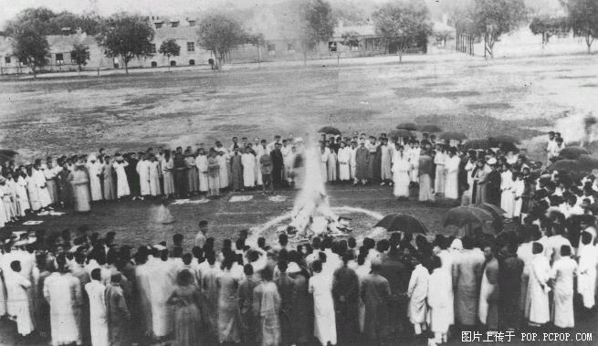
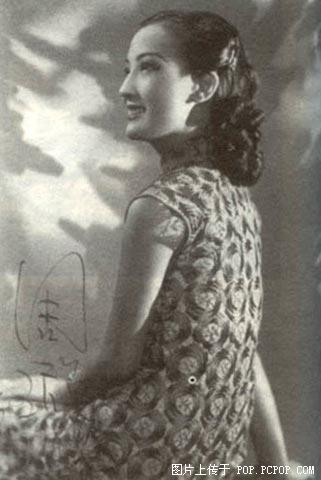
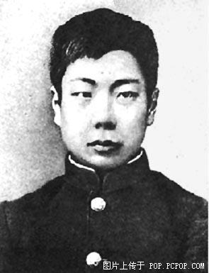
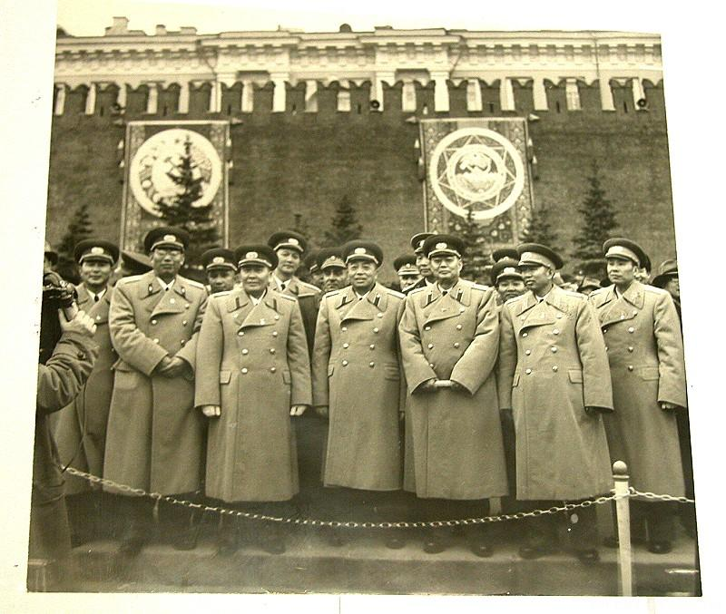
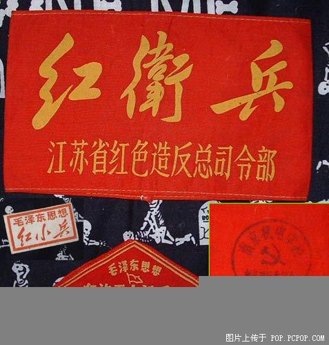
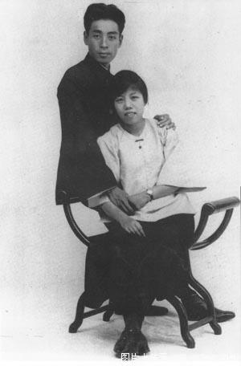

[1]﹕ 1919年5月清華大學師生焚燒日貨

[2]﹕ .送給宋慶齡的簽名照
[3]﹕祂曾經是我們的總理﹐永遠都是！
[4]﹕大內高手-清宮廷秘藏最早的照片
大內高手-清宮廷秘藏最早的照片
此照拍攝于1863年。攝影術誕生于鴉片戰爭前夕的1839年﹐距今已有整整152周年了．奕□的這張影像是在照相術發明后的24年拍下的﹐說明那時我們接受西方文明的速度並不慢﹐在中國人中間拍照肯定比之還要早。其時尚為醇郡王的奕□﹐在朝廷擔任都統、禦前大臣、領侍衛內大臣﹐管理神機營。可見該影像拍攝于奕□管理神機營時的北京南苑軍營﹐時年24歲
虛齡
﹐這是迄今保存奕□年輕時唯一的一張照片。“奕話身掛大腰刀．神采奕奕﹐年輕瀟□﹐風度翩翩﹐是典型的清代武官派頭“
原文如此﹚；左右是奕□的兩個貼身侍衛﹐分別肩扛火統﹐手握長槍
實際是一種鐵矛
﹐真實地反映了19世紀60年代清朝禁衛軍的風貌。這也是宮廷秘照中至今保存的最早的一幅照片﹐為研究我國軍事史﹐為研究我國攝影史﹐提供了可靠的形象資料﹐至為珍貴。
[6]﹕大清的“裱糊匠”李鴻章
[7]﹕西藏農奴
[8]﹕光緒帝寵愛的珍妃
[9]﹕1930年代風光一時的美人﹙1﹚﹕影星陳燕燕
[10]﹕1930年代風光一時的美人﹙2﹚﹕杜月笙情人孟小冬
[12]﹕1930年代風光一時的美人﹙3﹚﹕影星胡萍
[13]﹕1930年代風光一時的美人﹙4﹚﹕影星顧蘭君
[16]﹕1930年代風光一時的美人﹙5﹚﹕女明星周璇！

[17]﹕1930年代風光一時的美人﹙6﹚﹕宋子文夫人張樂貽
[18]﹕1930年代風光一時的美人﹙7﹚﹕上海小姐郭安慈

[19]﹕宋美齡在西安事變時寫給老蔣的信
[23]﹕十八歲時的中山先生！
[24]﹕1903年﹐魯迅先生留學 .時

[28]﹕大清帝國護照！
[29]﹕八國聯軍中的中國軍團
英國人組織的中國人部隊﹐ 參與八國聯軍侵華作戰。 攝影集“英國統治下的威海衛”有好幾張這支部隊的照片。 這張也收錄其中。
還有作戰后英國人嚮祂們授勛的照片﹐看后唏噓不已。
照片中的確實就是八國聯軍中的中國部隊﹐即中國軍團。以往的一些資料中誤記載為錫克兵。該軍團的士兵全由中國人組成﹐軍官則為英國人﹐裝備西式武器﹐采用西法訓練。庚子之役中﹐該軍團參加了攻打天津、北京等戰役﹙大家可以註意照片中軍團士兵的帽徽﹐庚子之役后﹐為給中國軍團表功﹐特地仿照天津城的城樓重新設計了軍團的帽徽﹚﹐因為作戰異常英勇﹐戰后在軍團軍官的堅決要求下﹐英國女王為軍團士兵授勛﹐並在威海等地為軍團的陣亡士兵設立紀念碑
今天再來回顧這段幾近湮滅的歷史﹐實在令人感慨。這支部隊的士兵來源是三國幹涉還遼后﹐英國人在華招募的﹐從關于該軍團的更多資料和照片分析﹐這支軍隊的裝備相當精良﹐訓練水準也很高。
[30]﹕秦虎符
上面印有﹕甲兵之符﹐右在皇帝﹐左在陽陵。
﹙“尋秦記”里面呂不違那這個東東要挾贏政﹚
[31]﹕慈禧與西洋貴婦
[32]﹕北洋大學堂畢業文憑這張光緒二十六年
1900年
正月頒發的北洋大學堂文憑﹐是中國近代最早的大學畢業文憑之一﹐ 成為中國近代教育改革的歷史見證。
[34]﹕清廷皇宮中的大太監。右起﹕劉興橋﹙養心殿禦前太監﹚、王鳳池﹙養心殿東夾道二帶班﹚、楊子真﹙養心殿禦前太監﹚。
[35]﹕清末上海十大名妓
[36]﹕一個日軍在炫耀祂的“戰績”
這張本來不想發﹐因為我已記住了對 .人的憤怒﹐但現在輿論還有漢奸為JIPIG說好話﹐所以希望是中國人的都醒來！
[37]﹕圍看西洋鏡的兒童
1900年﹐昆明
從衣著上看﹐兩個正在觀摩“進口大片”的兒童應來自富裕人家。而更左邊的那個孩子也許正焦急地嚮父親提著這時髦的要求。對于古老的中國百姓來說﹐西洋鏡
皮影戲
與洋槍洋炮一樣給人印象深刻﹐代表著西方文明的最新成果﹐而這三個字中包含的驚奇含義一直保留至今。從攝影上說﹐這是一張層次分明、構圖完整的照片﹐一看之下幾乎完全註意不到攝影者的存在﹐除了右邊那個小孩以外﹐所有人物都自然生動地活在祂們周圍的環境中﹐同時又像戲劇角色一樣襯托著主要的事件。在攝影才剛剛發明不久的那個年代﹐這樣水準的拍攝眼光和技巧的確令人稱奇。
[38]﹕也有日軍佔領時期的“發廊女”
1941年初﹐日軍佔領廣東期間﹐廣州一家由漢奸所開設的理發廳公然打出“皇軍大歡迎”的字樣。兩個女郎站在門口攬客﹐其中一位嘴上叼著煙卷﹐風塵味十足。這一幕由
.隨軍記者拍下﹐刊于
.報紙上﹐作為日軍進佔中國受到“歡迎”的證據﹐大事宣揚。日軍佔領中國期間中國人中也確有少數投機份子賣身投靠﹐氣節全無。古詩有雲﹕“商女不知亡國恨﹐隔江猶唱后庭花。”圖中的“親日女子理發”不僅不知亡國恨﹐實際上是賣國求榮﹐恬不知恥。事實上﹐二戰期間的法國也出現類似的事例﹐一些法國女人主動嚮德國佔領軍投懷送報以換取物質享受﹐戰后這些女子被憤怒的法國民眾削光頭發﹐遊街示眾。
[39]﹕北伐時期周恩來標準照！。
[40]﹕恩來酷照！用西方人的語言﹐這就是聖徒的目光
長征時期所拍
尼克鬆說﹕如果沒有毛澤東﹐中國革命之火可能不會燃燒起來；如果沒有周恩來﹐中國的革命可能被燒毀﹐隻剩下一堆灰燼。
[41]﹕周恩來被江青騎馬撞傷后所拍﹐左為劉少奇。
[42]﹕上山下鄉通知書
[43]﹕中越戰爭時﹐解放軍的戰地通告
[44]﹕袁大頭稱帝登基
[45]﹕革命婚禮
[48]﹕三寸金蓮的真實面目
[49]﹕當皇帝隻是聽起來比較過癮罷了﹐瞧瞧吧!這些就是清帝的妃子
[50]﹕中共瑞金時期的足球隊！可能是最早的“紅色足球隊”。
[53]﹕參加蘇聯紅場閱兵的中共將帥

[55]﹕. 主席. 風華正茂時的照片
[56]﹕1950年代的“駕駛執照”！
[57]﹕傾家蕩產捐獻“香玉號”飛機的著名豫劇演員常香玉﹐為誌願軍演出。常香玉已于2004年6月1日去世！紀念老藝術家！
[58]﹕常香玉捐給誌願軍的飛機
59]﹕紅色中國的“第一父子”！
[60]﹕老蔣難得一見的“調情”照片！
[61]﹕過去的“刑滿釋放證”
[62]﹕1912年2月15日﹐孫中山率文武官員祭明孝陵
孫中山之左一為黃興﹐左二為徐紹楨﹐右為黃鐘瑛
?
[63]﹕大家都熟悉﹐那個時代憤青的標誌！

[64]﹕忠字舞
[65]﹕真實的黃飛鴻
[66]﹕真實的十三姨
[67]﹕蘇聯紅軍在東北發行的軍票
[69]﹕搗毀白虎團指揮所
[71]﹕解放初期的畢業證書
[74]﹕而這位﹐是杜月笙的開山兄長﹐“流氓大亨”黃金榮！
[75]﹕孫中山靈堂﹐靈堂上的對聯﹐后來成為國共兩黨的革命名言！
[76]﹕白求恩大夫和祂的朋友﹐一個年紀比較大的兒童團員的合影
[77]﹕鐵人王進喜﹐一個朝氣蓬勃時代的象征
[79]﹕周恩來真的是風流倜儻的翩翩美男子啊！夫妻恩愛﹐為人為事﹐都令人極其佩服！

[80]﹕1970年代宣傳畫《拾到5分錢》
[81]﹕二戰時期德軍中的中國炊事員﹐祂可是個傳奇性的小人物喲。先被日軍征招；參加日軍對蘇軍的諾門坎之戰時被蘇軍俘獲﹐在蘇聯西部開始勞工生涯；1941年下半年被德軍俘虜﹐然后一直在德法一帶當炊事員；最后被美軍俘獲。
[82]﹕二戰時期德軍中的中國軍官
[84]﹕這玩意叫貓車﹐是以前高麗縣衙里老爺坐的。
[85]﹕高麗傳統的露 . 服裝﹐后來被 .人禁止了。
[86]﹕滿州妖艷──川島芳子
[87]﹕衛星拍攝的 .. 全景﹐何時歸故里？
[106]﹕抗日名將吉鴻昌
[107]﹕1940年﹐馬佔山在困境中表示﹕“ .固有新奇的武器﹐我當以熱血應付； .固有猛烈的槍炮﹐我當以頭顱拼擋。”
祂在一次營團以上軍官會議上慷慨誓言﹕“作為軍人﹐誌在以身報國﹐苟有一線之機不減﹐自應鼓舞勇氣﹐而為.
盡其最后之犧牲。凡為官為吏﹐不過一時職業之選擇﹐民族之保存﹐始為骨頭之歸宿!
?
[108]﹕ .戰時國防大地圖﹙野心真不小﹚
[109]﹕汪精衛在偽政權辦公室！漢奸的嘴臉！
[110]﹕1892年12月﹐孫中山在澳門開設中西醫藥局行醫。這是祂籌集資金開設藥局的借款單據。
﹙電影“黃飛洪”中有一段就是根據這段歷史改變的﹐孫文幫黃師傅在世界醫學研討會上當翻譯﹚
[111]﹕1943年秋季大掃蕩﹐被日寇強奸並碎尸的阜平縣羅峪村22歲的婦救會主任、 . 員劉耀梅。
日寇拷打她時﹐割下她的肉烤吃﹐最后砍下了她的頭顱﹐並從她的軀幹上挖下肉來帶回去包餃子。
不共戴天的 .畜生！
[112]﹕日軍戰時死亡通知書
[113]﹕滿州國界碑
[114]﹕ .殖民統治時代的 . 帝國大學
[115]﹕百團大戰第二階段三分區二團在淶靈戰役中﹐二團一連連長李永生﹙呵呵﹐我大學時候的足球老師也叫李永生！﹚
[116]﹕真實的地雷戰！不是電影哦！
一對農民夫婦把洋鐵罐、酒瓶、茶壺等一切可以利用的東西﹐製成地雷﹐為保衛家鄉做出貢獻
[117]﹕罌粟田里的中國人﹕1899年 紅河──昆明
一個中國人茫然站在廣闊的罌粟田中﹐這一畫面象征性地表現出當時煙毒在中國的泛濫肆虐情況。而廣種罌粟、發展與沿海各省的“雲土”貿易﹐進而與英國東印度公司爭雄﹐也是方蘇雅代表的法國
. 在華殖民的主要戰略方針之一。
罌粟的歷史幾乎與人類歷史一樣悠長。古希臘偉大的盲詩人荷馬曾說牠“能消除所有的痛苦和爭吵、卻不會帶來一絲罪惡”﹐但到了晚清的中國﹐這句話已成反諷。
眾所周知﹐在列強近代打開中國閉關自守大門之時﹐鴉片扮演了侵略的急先鋒角色。吸食鴉片的惡習雖在17世紀就從南洋傳入中國﹐1729年清雍正帝下令禁止。鴉片戰爭后﹐煙禁廢弛﹐清
. 開放陝、甘、川、湘、滇、黔等省份種植鴉片。雲南由于自然條件宜于罌粟生長﹐受到清 .
鼓勵種植﹐並以盛產色香味優的“雲土”著名。當時因為雲南種煙比種豆麥獲利更豐﹐地方 . 還開征“土藥
鴉片
厘金”征收稅費﹐完全承認了種鴉片的合法性。至光緒年間全省各縣均開遍了罌粟花。昆明48堡﹐竟有50多個村落發展到家家皆種植罌粟。光緒二十二年
公元1896年
全省大豐收﹐產量達570萬兩,其中除部分自用以外,均由煙販運銷外省,昆明成了集散樞紐,有慶豐號、源慶號等52家煙土商號,此外還有外省駐昆煙號43家。可以說﹐當時雲南的大商號起家都與煙土有關。據《清實錄》記載﹐清道光三年
公元1823年
雲南吸食鴉片已很普遍,“文武衙門幕友、官親、跟役、當差,以及各城市文武生、商賈、軍民人等,吸煙者十之五六”；而到晚清﹐不但有“阿芙蓉會館”這樣的公開營業場所﹐妓院、私娼處也是每床一燈﹐一些富戶家中甚至以鴉片待客。還發展出對煙具的癖好。據羅養儒《紀我所知集》記載﹐光緒初葉一個叫謝瑾的騰越太守﹐僅煙槍就特製了36支﹐且槍槍有名﹐每吸三口就換一支槍；而其煙燈罩用水晶製成﹐槍一靠近燈會發出彩色；煙盤用紫檀木製成﹐大小三個並一鬥架；煙鬥則有三四百個﹐也時時變換。而當時的一個著名癮君子被叫作“煙魁”﹐竟然每日晨要喝一碗開水拌煙土﹐否則飯都吃不下。由官到民的這種風氣﹐可見煙毒對當時雲南的禍患之深。
作為推行法國殖民政策的外交官﹐方蘇雅當然很註意鴉片在中國的種植和吸食情況﹐不過就連祂也對中國人對鴉片的依賴程度感到驚訝。當祂看見為祂抬轎的苦力們把辛苦掙來的一點錢幾乎不用于吃飯而用于吸煙時﹐感到極大的震動。如果祂活到現在﹐大概也會為在祂的祖國法國每年有250人
1980年代官方數字
死于過量吸毒而感到內疚。歷史有時是譏諷性的﹐有時也驚人的相似。
[118]﹕在最佳亞洲電影﹕《黃昏清兵衛》﹙ .﹚獎頒發過后﹐主持人黃子華對原島大地說﹕麻煩你跟 .人說一說﹐ .是中國的。
全場掌聲雷動
[119]﹕趙四小姐時裝照
[120]﹕二戰時期德軍中的中國士兵
[121]﹕永恆的《大前門》
《大前門》香煙問世已有70多年歷史﹐在卷煙商標上的文字﹐在不同年代的時期有使用中、英文字的﹐中文和漢語拼音的。解放前最早使用過全英文版的﹙見圖所示﹚。煙卷有紙嘴煙、過濾嘴煙和普通煙之分。10支裝全英文版﹙最早期的硬卡包裝﹚、20支裝、50支馬口鐵聽裝﹐也使裝潢各具特色。盡管有以上種種變化﹐但《大前門》的標記形象從未改變過﹐牠的牌名和圖案象征著中華民族的偉大和尊嚴。這在中國煙草裝潢史上是罕見的。
[122]﹕同仇日﹐共赴國難！
[123]﹕左腿肉全被日軍割光吃掉的國軍士兵
[125]﹕明代禦林軍佩牌
南京皇城是朱元璋興建的,皇城內多為 . 機構和皇家禦園。洪武二年
公元1369年
,設立親軍都尉府,統領中、左、右、前、后五衛,專事對皇城的保衛。洪武六年
公元1373年
造守衛金牌,或鍍金銅牌,牌上有篆文“守衛“、“隨駕“字樣,存尚寶司,軍士值班領取佩帶,下值時交回。洪武十五年
公元1382年
,建錦衣衛,設南北鎮撫十四司,其編製將軍、力士、校尉,專門為皇帝護駕,並有巡查緝捕任務,是禦林軍。校尉是禦林軍的低級軍官,負責皇城安全,檢驗出入皇城人員的證件,若有失查,從重治罪。此銅牌為值夜班的軍士佩帶。
[126]﹕錦衣衛木印 ﹙魏忠賢東場﹚
明朝時期
木質印信
印面邊寬11.5厘米、印面厚1厘米、通高4厘米
此印縮肩平紐﹐有部分裂紋。印面篆刻“錦衣衛印”﹐背面刻“成化十四年三法司置”。錦衣衛是明代內廷侍衛偵察機關﹐始建于洪武十五年﹙公元1382年﹚﹐專門從事侍衛緝捕刑獄之事﹐是皇帝的侍衛與耳目與明王朝相伴始終。明初朱元璋為加強中央集權。以刑部、都察院、大理寺分典刑獄。稱三法司﹐讓其互相製約﹐如遇重大要案由三法司會審結案。這枚木印是三法司會同刻置的。
[127]﹕﹙又回到抗日﹚ .終于投降了！八年抗戰和第二次世界大戰在此刻落下帷幕！